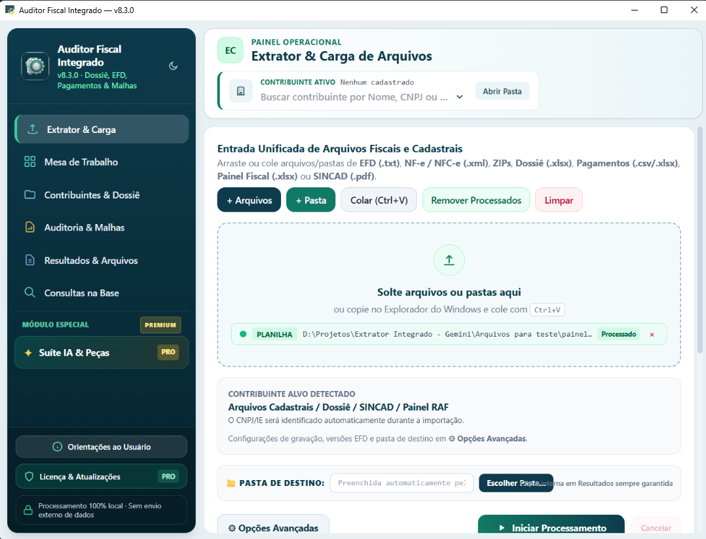
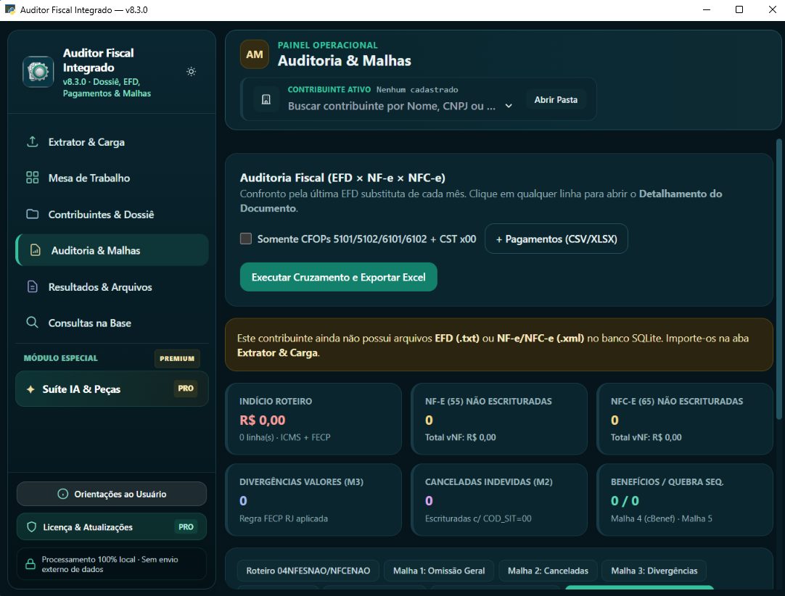
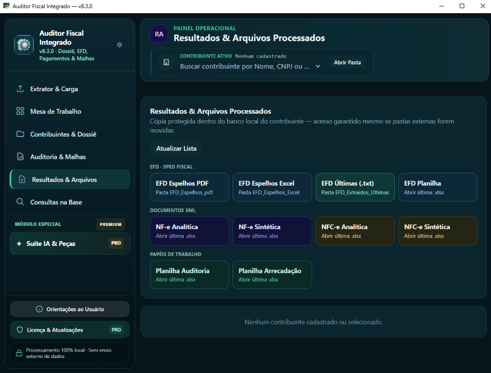

NF-e / NFC-e (XML)
Organiza por período/chave e gera planilhas prontas para conferência.
Carregue arquivos NF-e, NFC-e e EFD e receba planilhas XLSX prontas para revisão, pastas organizadas e espelhos PDF — tudo rodando localmente no seu computador.
Organiza por período/chave e gera planilhas prontas para conferência.
Extrai blocos e registros relevantes sem depender de nuvem.
Cruza documentos e aponta divergências automaticamente.
Central de carga de XML, EFD, ZIP, Dossiê e SINCAD com log de processamento em tempo real.



Nenhum XML, EFD ou planilha é enviado para servidores externos ou nuvem.
Cada contribuinte ou projeto mantém sua base organizada localmente.
Validação offline por arquivo .lic assinado, sem rastreamento.
| Versão | Data | Novidades | SHA-256 |
|---|---|---|---|
| 8.2.5 | 16/11/2026 | Melhorias no Extrator & Carga e Malhas 1–5 | a1b2c3...9f |
Não. Todo o processamento ocorre 100% localmente no seu computador.
Sim, em versões iniciais sem certificado EV. Clique em "Mais informações" e depois em "Executar assim mesmo".
Arquivo selecionado: